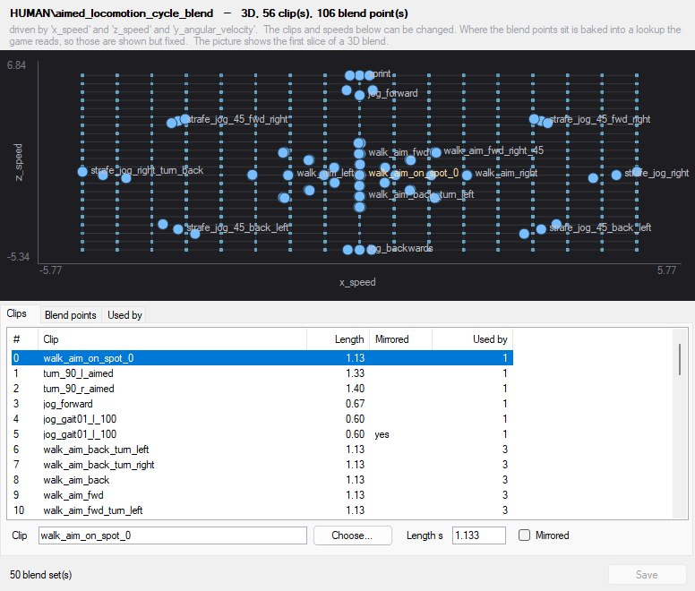
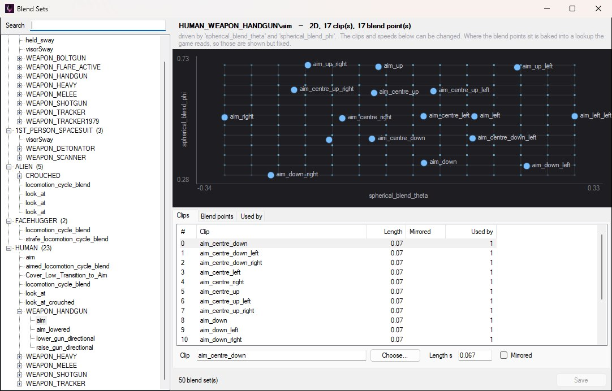
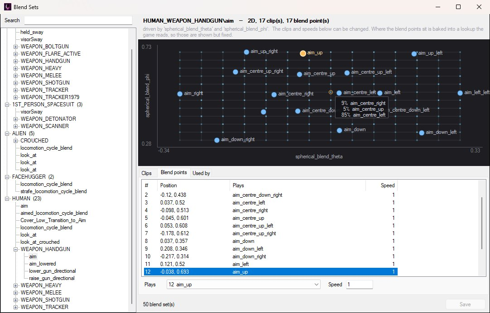
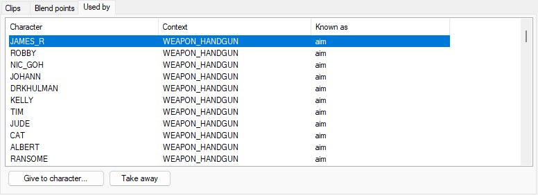
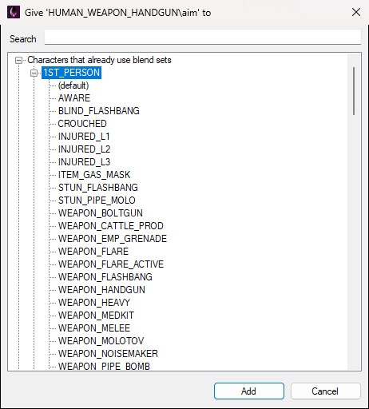

Open View → Blend Set Editor to edit the parametric blend sets stored in ANIMATION.PAK.
A blend set is what turns a continuous value into animation. "Aim at 30 degrees up and 10 to the left" isn't a clip the game ships — it's a mix of the four clips that surround that point. The blend set holds those clips, the grid of blend points they're arranged on, and which parameters drive the position within that grid.
Sets can be one, two or three dimensional depending on how many parameters steer them. The set below is a 3D one: three parameters, 56 clips, 106 blend points, and a picture that can only show the first slice of it.

A 3D set: 56 locomotion clips over x_speed, z_speed and y_angular_velocity. Rows 4 and 5 are the same clip, the second played mirrored.
A blend set has two halves, and only one of them is authored data.
The authored half is what you can edit here: which clips the set uses, how long each runs, whether it's mirrored, which clip each blend point plays, and how fast it plays. Everything in that half can be changed freely.
The other half is a lookup table the game reads at runtime, computed offline from where the blend points sit. That bake only ever refers to blend points by number, which is why the authored half can change without invalidating it.
Blend point positions are fixed. Moving a blend point, or adding one, would need that lookup rebuilt — which isn't offered. Positions are shown so you can see the shape of the blend, but they can't be edited. That's deliberate: it stops you producing a file that looks correct in the editor and plays wrong in game.
The blend set list is on the left; everything about the selected set is on the right, split across three tabs — Clips, Blend points and Used by — with a picture of the blend space above them, as shown below. The header line at the top gives you the shape at a glance — how many dimensions, how many clips, how many blend points — and the grey line under it names the parameters that drive each axis and reminds you which half of the set is editable.

HUMAN → WEAPON_HANDGUN → aim: a two-dimensional set of 17 aim clips driven by spherical_blend_theta and spherical_blend_phi.
Sets are grouped the way their names are built: by animation set, then by the context inside it — so HUMAN → WEAPON_HANDGUN → aim in the tree is the set the game knows as HUMAN_WEAPON_HANDGUN\aim, which is how the header line spells it. Sets belonging to the animation set itself (rather than to one of its contexts) hang directly off it, like HUMAN → aim — a different set from the handgun one. Each animation set shows how many blend sets it holds.
The Search box matches the set's name and the names of the clips inside it, so you can find a blend by an animation you know is in it.
The clips the set draws from, numbered. Each row shows its index, the clip name, its length in seconds, whether it's mirrored, and how many blend points use it.
That last column is worth watching — a clip used by no blend point is doing nothing.
One row per blend point, showing its index, its position along each driving axis, which clip it plays, and at what speed.
Above the tabs is a picture of the blend space with the points laid out on it — each blue dot is a blend point, labelled with the clip it plays (labels are dropped where they'd overlap), and the faint grid behind them is the baked lookup the game reads. Click a point in the picture to select its row, and vice versa; the selected point is drawn orange. Hover a grid point to see which clips the game would mix there and in what proportion — the only way to see what a blend set actually does without playing it. For a 3D blend, the picture shows the first slice.

Selecting a blend point in the list highlights it in the picture; hovering a grid point shows the mix the game would play there — here 85% aim_centre_left, 9% aim_centre_right and 5% aim_centre_up.
Which characters can actually reach this blend set — the game only finds a set through a character's own clip database, so one that nobody lists is dead weight. Each row names the character, the context it's offered in — or (the character itself) when it isn't tied to a context — and the name that character asks for it by.

HUMAN_WEAPON_HANDGUN\aim as its characters see it: offered through their WEAPON_HANDGUN context, under the plain name aim.
Give to character… opens the picker shown below, which lists characters already carrying blend sets first and everything else after. Choose a character to give the set to the character itself, or expand one and choose a context (an unnamed context is listed as (default)), then press Add or double-click it. Take away removes the selected reference. Removing a reference doesn't delete the blend set, only that character's access to it.

Give to character…, with 1ST_PERSON expanded to its contexts. The Search box narrows the tree by character name.
With a clip row selected, you can change:
With a blend point row selected:
When the Animation Tree Editor opens this window to choose a blend set for a node, it's titled Choose a blend set and gains a Use This Blend Set button. The list isn't filtered in that mode — the blend set a tree references generally doesn't belong to that tree's own animation set, so narrowing the list would hide most of the useful options.
Changes are held until you press Save, which becomes available once something has been edited. The status bar shows unsaved changes in the meantime, and closing the window with edits outstanding asks first.
Saving writes ANIMATION.PAK — it is separate from File → Save Level in the script editor, and applies to every level, since the archive is global.